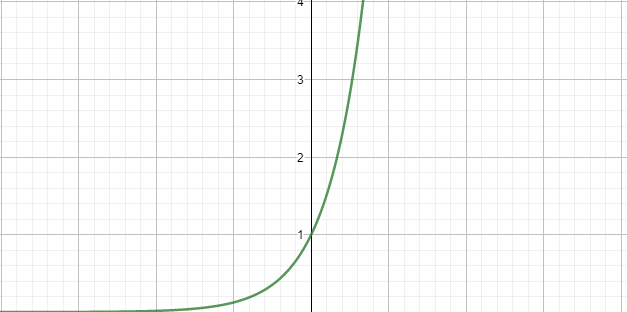
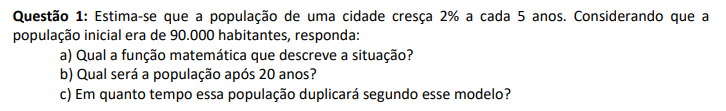
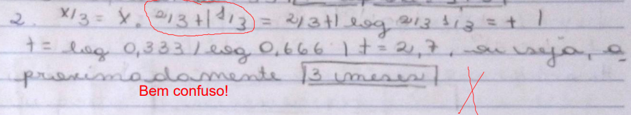

Funções Exponenciais e Logarítmicas
Sobre Funções Exponenciais
Funções exponenciais são funções definidas pela expressão f(x) = aˣ, sendo que a é um número real e diferente de 0. Um exemplo de função exponencial é f(x) = 8ˣ. No quesito gráficos, a reta sempre passa pelo ponto (0,1) (isso porque todo número diferente de 0 elevado a 0 é 1). É crescente se a for maior que 1 e decrescente se for menor que 1 mas maiores que 0. Aqui é o gráfico da função exponencial que eu usei como exemplo, feito no Geogebra:

As funções exponencias são mais usadas em casos específicos, tendo então suas equações adaptadas para cada situação.
Sobre Funções Logarítmicas
Um logaritmo de b na base a é o expoente x ao qual a base deve ser elevada para que aˣ = b. Resumindo, log₃ 81 = 3, já que o número que ao ser elevado a 3 resulta em 81 é 3.
As consequências da definição dos logaritmos são:
- logₐ 1 sempre resulta em 0;
- se o logaritmando for igual a base, ficamos com logₐ a = 1;
- quando logₐ aᵐ, o resultado é m;
- a potência de base a e expoente logₐ b será igual a b, ou seja a^logab = b;
Já as propriedades do logaritmos são:
| Primeira Propriedade |
Logaritmo de um produto |
O logaritmo de um produto é encontrado na soma de seus logaritmos. |
| Segunda Propriedade |
Logaritmo de um quociente |
O logaritmo de um quociente é encontrado com a subtração dos logaritmos. |
| Terceira Propriedade |
Logaritmo de uma potência |
O logaritmo de uma potência é encontrado no produto dessa tal potência pelo logaritmo. |
| Quarta Propriedade |
Mudança de base |
A mudança de base é realizada com a seguinte expressão: logb N = logaN/logb. |
Uma função logarítmica é uma função que segue a expressão f(x) = logₐ x sendo a diferente de 0 (a função logarítmica é o contrário de uma função exponencial). Seu gráfico sempre passa pelo ponto (1,0), está sempre todo a direito do eixo y e é crescente se a for maior que 1, mas descrescente se a for maior que 0 e menor que 1.
Minha Experiência
Eu acho que foi, para mim, relativamente fácil entender as funções exponenciais. Eu na verdade achei bem divertido fazer as questões do trabalho 2 referentes a esse assunto - minha preferida foi a 1, porque apesar de ser um conteúdo novo, me lembrou um pouco de outros conteúdos que eu estudei e achei legal aprender sobre.

Funções logarítmicas, por outro lado, com certeza foi o assunto que eu mais tive dificuldade. Para mim, entender como os logaritmos eram resolvidos foi algo bastante complicado e eu ainda cometi alguns errinhos por falta de atenção na lista. Posso dizer que, no momento em que eu estudei sobre logaritmos pela primeira vez, eu não tinha entendido nada. Eu reassisti as aulas e reli a matéria nos últimos dias para a confecção do meu portfólio e acho que isso me ajudou a aprender o conteúdo, mas no momento inicial, eu realmente estava boiando. Falando da questão de errinhos de atenção, eu chego ao exercício 2 do Trabalho 2, que eu acabei errando por falta de organização. Eu gosto de ocupar pouco espaço, então acabo fazendo tudo que eu posso para algo caber em uma linha, e isso acabou causando bastante desorganização (nem eu entendi o que eu queria fazer nessa questão, olhando ela agora).

Em geral, acho que estou bem com esses dois assuntos agora. Entretanto, de início, eu tive bastante dificuldade com logaritmos.